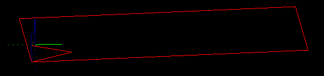

Mar 2015
HOWTO use Ramping
From this
|
To this!
|
With the advent of stronger home CNC routers (and mills) like the Shapeoko and OX, comes the need to cut harder materials like aluminum.
The right way to enter cuts in such materials is to ramp in at an angle until the cutter reaches the correct depth.
With this release (1.2b, Apr 2015) SketchUcam brings you simple ramping options that increase your work envelope in harder materials.
Of course, the previous option of plunging directly into the work is still available.
Basics
With ramping turned on any point that would have been a plunge becomes a ramp along the first segment of the cut, and also after tabs, as you can see in the image at right. The cut begins at the closest corner to the origin and ramps along the first segment, taking two passes to get to full depth. In this case the ramp angle limit is 5 degrees.
If the first segment of a cut is very short, less than 0.02" or 0.5mm, the cut will be converted to a vertical plunge.
A comment will be inserted in the code saying
(ramplimit end, translated to plunge)
Again we emphasize the need to preview the Gcode before cutting, especially if the bit has limited plunge capability
(in which case a possible solution is to do a drawing with plunge holes at all start points and use an actual drill bit to
pre-drill all those holes).

The 'plunge rate' feed speed is used for all ramp movements.
This can be the same as the Feed speed, or less, depending on the capabilities of your tool bit and machine strength.
There are two modes of operation, with and without ramp angle limiting.
- With the ramp angle set to 0 degrees, the angle is not limited. This means that depth will always be reached in a single zigzag. For a short segment the 'ramp' could be almost vertical so it is important to study the Gcode in a previewer before cutting to ensure that the angles are sensible. However, ramping on arcs will be limited to 45 degrees even when limit set to 0.
- With the ramp angle limit set from 1 to 45 degrees the actual cut angle is always less than or equal to the given angle. As many ramp movements as are needed to get to depth at the angle given will be generated. The number of ramps must always be an even number so the count is rounded up, thus reducing the angle slightly in many cases.
The ramp options are set on the parameters dialog, a segment of which is shown at right.
Tick 'Ramp in Z' to turn ramping on.
Set the 'Ramp angle limit' to 0 for no limit, or to a value from 1 to 45 degrees for a limited angle.
Note that small angle limits may significantly increase your cut time
Shortening long ramps:
If the first segment of a cut is a very long straight line the ramp will be very long. You can shorten it by placing a tab a suitable distance along that line, and then use the PB erase tool to remove the tab. The cut line will remain 'broken' at that point and the ramp will only go up to the break, as illustrated at right. In that drawing is an outside cut around a 100x30mm rectangle, the long cuts are just over 100mm, and the ramp is about 20mm long to a depth of 10mm.
Multipass ramps:
Multipass ramping has been optimized by allowing the tool to rapid down to the previous pass level after tabs, before beginning the new ramp. The rapid will stop 0.25mm above the previous pass depth. If the multipass depth is less than 0.25mm then passdepth/2 is used as the hold off height.

In the image at above you can see that the first pass is deeper than the tab so it ramps from the top of the tab down to the pass depth (-5.3mm in this case). On the second pass it rapids (the vertical blue line) down to -5.05 (= 5.3 less 0.25) before starting the ramp down to final depth, here is the Gcode
G0 Z-5.050 F1000 ; rapid down to 0.25mm short of previous pass G1 x111.500 y8.500 z-7.775 ; ramp first part X64.482 y8.500 z-10.500 ; ramp back to start X111.500 F2000 ; proceed with cut
V-tabs:
If you use a 'normal' V-tab the angles may be much higher than the limit angle for your toolbit. To make it easy to find a V-tab width that preserves the ramp angle limit, a tool has been added to the Tools|Phlatboyz menu. To use it:
- On the Parameters dialog, set your tab depth, shallow tabs are recommended otherwise the tabs can be very long, start at 75% depth (which leaves 25% of material thickness behind).
- Set the ramp angle limit
- Close the Parameters dialog
- Pick 'Set Ramp Vtabs' on the Tools|Phlatboyz menu.
- Open the Parameters dialog and you will see that the tab width and depth have been changed.
Ramping and plunge holes
The helix angle used for boring holes will be limited to the ramp angle if it is set > 0. If not set the normal scheme is used, ie each helix depth will be limited to multipassdepth or to bitdiam/2 if multipass is off. Limiting the helix angle means that the number of cuts will vary with diameter, requiring more cuts for the inside of a hole than for the final diameter cuts. This is particularly noticeable at low ramp limit angles.
When ramping is on the plunge hole routine will try hard to not plunge directly into the work.
Obviously, if the plunge hole is the same diameter as the toolbit, it will have to plunge. In this case
it may be better to do a seperate drawing with just these holes on it, and generate Gcode with either:
multipass set to a much smaller multipass depth than would be used for the normal cuts
or
normal multipass depth, but use a real drill bit for the cuts, and run this file before the normal cut file.
For holes with diameter larger than the toolbit, plunging the center hole will be avoided as follows:
-
For holes less than 2xbitdiam it will use the setting of the 'Stepover%' to decide whether or not to do an initial bore of the center before is does the finishing pass.
- Stepover% < 50%
- do an initial helical bore of 70% of final hole size, use this for hard materials (metals)
- Stepover% >= 50%
- skip the initial bore and just do the finished hoel size pass, use this for not so hard materials like G10
For holes greater than 2x bitdiam it will always helical bore an initial hole with offset of bitdiam/2. This bores a hole 2 x bitdiam and clears the center without plunging.
Keep in mind that the Stepover% will also be used to set the stepover of the bit for each helical pass.